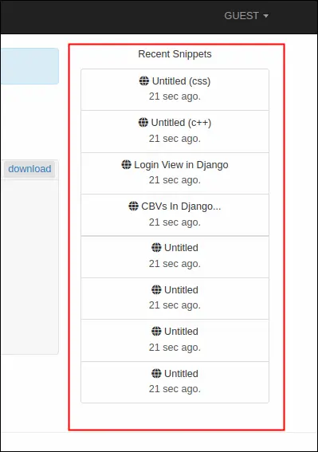

Building Djangobin - The First Steps
Last updated on July 27, 2020
In the previous few chapters, we have learned quite a lot about Django. In this chapter, we will take the first steps to build our djangobin application.
Creating Snippets #
Let's start by building a form which will allow users to submit new snippets.
Open djangobin app's forms.py file. At this point, it should look like this:
djangobin/django_project/djangobin/forms.py
1 2 3 4 5 6 7 8 9 10 11 12 13 14 15 16 17 18 19 20 21 22 23 24 25 26 27 28 29 30 31 | from django import forms
from django.core.exceptions import ValidationError
from .models import Language
class LanguageForm(forms.ModelForm):
class Meta:
model = Language
fields = '__all__'
def clean_name(self):
name = self.cleaned_data['name']
if name == 'djangobin' or name == 'DJANGOBIN':
raise ValidationError("name can't be {}.".format(name))
# Always return the data
return name
def clean_slug(self):
return self.cleaned_data['slug'].lower()
def clean(self):
cleaned_data = super(LanguageForm, self).clean()
slug = cleaned_data.get('slug')
mime = cleaned_data.get('mime')
if slug == mime:
raise ValidationError("Slug and MIME shouldn't be same.")
# Always return the data
return cleaned_data
|
Delete everything and enter the following code:
djangobin/django_project/djangobin/forms.py
1 2 3 4 5 6 7 8 9 10 11 12 13 14 15 16 17 18 19 20 21 22 23 24 25 26 27 28 29 | from django import forms
from django.core.exceptions import ValidationError
from .models import Snippet, Language, Author
from .utils import Preference, get_current_user
class SnippetForm(forms.ModelForm):
class Meta:
model = Snippet
fields = ('original_code', 'language', 'expiration', 'exposure', 'title', 'tags')
widgets = {
'original_code': forms.Textarea(attrs={'class': 'form-control', 'rows': '10',
'spellcheck': 'false'}),
'language': forms.Select(attrs={'class': 'selectpicker foo form-control',
'data-live-search': 'true',
'data-size': '5'}),
'expiration': forms.Select(attrs={'class': 'selectpicker form-control'}),
'exposure': forms.Select(attrs={'class': 'selectpicker form-control'}),
'title': forms.TextInput(attrs={'class': 'selectpicker form-control',
'placeholder': 'Enter Title (optional)'}),
}
def save(self, request):
# get the Snippet object, without saving it into the database
snippet = super(SnippetForm, self).save(commit=False)
snippet.user = get_current_user(request)
snippet.save()
return snippet
|
Here we are defining a SnippetForm class which inherits from forms.ModelForm. The model attribute of the Meta class connects SnippetForm to the Snippet model and fields attribute specifies a list of model fields that you want to show in the form.
In line 12, we are using widgets attribute of the inner Meta class to add bootstrap CSS classes and other attributes to the model fields.
In lines 24-29, we are overriding the save() method of the ModelForm class. The save() method takes request as an argument so that the logged in user can be accessed inside the method. In line 26, we are calling the parent class's save() method with commit=True. By default, the ModelForm's save() method creates an instance of the model that the form is connected to, saves it to the database and returns it. If you call save() method with commit=True then it only creates and returns the model instance without saving it to the database. We usually do this when we want to modify the object before saving or set some additional data, which is what we do next.
In line 27, we are calling get_current_user() function with the request argument. The get_current_user() is a utility function defined in djangobin app's utils.py file as follows:
djangobin/django_project/djangobin/utils.py
1 2 3 4 5 6 7 8 9 10 11 12 | from django.contrib.auth.models import User
class Preference:
#...
def get_current_user(request):
if request.user.is_authenticated:
return request.user
else:
return User.objects.filter(username='guest')[0]
|
A Snippet model has a one-to-many relationship with the User model. As a result, a Snippet object must be associated with a User object. If a user is creating snippet after logging in then we want to assign the snippet to that user. Otherwise, we want to assign the snippet to a guest user. This is essentially what get_current_user() function does. If the user is logged in then get_current_user() returns an instance of that user. Otherwise, it returns an instance of a guest user which is just a User object whose username is guest.
Once the user is set, we save the Snippet object and return it.
Start the Django shell and create a new guest user as follows:
1 2 3 4 5 6 7 8 9 10 | >>>
>>> from django.contrib.auth.models import User
>>>
>>> User.objects.create_user(
... username='guest',
... email='guest@overiq.com',
... password='password'
... )
<User: guest>
>>>
|
Next, open views.py and add modify index() view function at the top of the file as follows:
djangobin/django_project/djangobin/views.py
1 2 3 4 5 6 7 8 9 10 11 12 13 14 15 16 17 18 19 20 21 | from django.shortcuts import HttpResponse, render, redirect, get_object_or_404, reverse
from django.contrib import messages
from .forms import SnippetForm
from .models import Language
def index(request):
if request.method == 'POST':
f = SnippetForm(request.POST)
if f.is_valid():
snippet = f.save(request)
return redirect(reverse('djangobin:snippet_detail', args=[snippet.slug]))
else:
f = SnippetForm()
return render(request, 'djangobin/index.html', {'form': f})
def snippet_detail(request, snippet_slug):
#...
|
This view function displays the SnippetForm form and saves the submitted snippet to the database.
Before, we move on to the next section remove add_lang and update_lang URL patterns and view functions associated with it.
A Base Template For Djangobin #
Next, let's set up a base template for djangobin app. Create a template named base.html in templates/ directory of the djangobin app with the following code:
djangobin/django_project/djangobin/templates/djangobin/base.html
1 2 3 4 5 6 7 8 9 10 11 12 13 14 15 16 17 18 19 20 21 22 23 24 25 26 27 28 29 30 31 32 33 34 35 36 37 38 39 40 41 42 43 44 45 46 47 48 49 50 51 52 53 54 55 56 57 58 59 60 61 62 63 64 65 66 67 68 69 70 71 72 73 74 75 76 77 78 79 80 81 82 83 84 85 86 87 88 89 90 91 92 93 94 95 96 97 98 99 100 101 102 103 104 105 106 107 108 109 110 111 112 113 114 115 116 117 118 119 120 121 122 123 124 125 126 127 128 129 130 131 132 133 134 135 136 137 138 139 140 141 142 143 144 145 146 147 148 149 150 151 152 153 154 155 156 157 158 159 160 161 162 163 164 165 166 167 168 169 170 171 172 173 174 175 176 177 178 179 180 181 182 183 184 185 186 187 188 189 190 191 192 193 194 195 196 197 198 199 200 201 202 203 204 205 206 207 208 209 210 211 212 213 214 215 216 217 218 219 220 221 222 223 224 225 226 227 228 229 230 231 | <!DOCTYPE html>
<html lang="en">
<head>
{% load static %}
<meta charset="utf-8">
<meta http-equiv="X-UA-Compatible" content="IE=edge">
<meta name="viewport" content="width=device-width, initial-scale=1">
<title>{% block title %}Djangobin{% endblock %}</title>
<!-- Bootstrap -->
<link rel="stylesheet" href="{% static 'djangobin/css/bootstrap.min.css' %}" >
<!-- Latest compiled and minified CSS -->
<link rel="stylesheet" href="{% static 'djangobin/css/bootstrap-select.min.css' %}" >
<link href="https://use.fontawesome.com/releases/v5.0.7/css/all.css" rel="stylesheet">
<!-- HTML5 shim and Respond.js for IE8 support of HTML5 elements and media queries -->
<!-- WARNING: Respond.js doesn't work if you view the page via file:// -->
<!--[if lt IE 9]>
<script src="https://oss.maxcdn.com/html5shiv/3.7.3/html5shiv.min.js"></script>
<script src="https://oss.maxcdn.com/respond/1.4.2/respond.min.js"></script>
<![endif]-->
<link rel="stylesheet" href="{% static 'djangobin/css/main.css' %}">
<link rel="stylesheet" href="{% static 'djangobin/css/default.css' %}">
</head>
<body>
<nav class="navbar navbar-default navbar-inverse navbar-fixed-top">
<div class="container">
<!-- Brand and toggle get grouped for better mobile display -->
<div class="navbar-header">
<button type="button" class="navbar-toggle collapsed"
data-toggle="collapse" data-target="#bs-example-navbar-collapse-1"
aria-expanded="false">
<span class="sr-only">Toggle navigation</span>
<span class="icon-bar"></span>
<span class="icon-bar"></span>
<span class="icon-bar"></span>
</button>
<a class="navbar-brand" href="{% url 'djangobin:index' %}">DjangoBin</a>
</div>
<!-- Collect the nav links, forms, and other content for toggling -->
<div class="collapse navbar-collapse" id="bs-example-navbar-collapse-1">
<ul class="nav navbar-nav">
<li {% if request.path == '/' %}class='active'{% endif %} >
<a href="{% url 'djangobin:index' %}">Add new</a>
</li>
<li {% if request.path == '/trending/' %}class='active'{% endif %}>
<a href="">Trending<span class="sr-only">(current)</span></a>
</li>
<li {% if request.path == '/about/' %}class='active'{% endif %}>
<a href="">About</a>
</li>
<li {% if request.path == '/contact/' %}class='active'{% endif %}>
<a href="">Contact</a>
</li>
</ul>
<form action="" class="navbar-form navbar-left" method="get">
<div class="form-group">
<input type="text" name="query" class="form-control" placeholder="Search" value="">
</div>
</form>
<ul class="nav navbar-nav navbar-right">
<li class="dropdown">
<a href="#" class="dropdown-toggle" data-toggle="dropdown" role="button"
aria-haspopup="true" aria-expanded="false">
{% if request.user.is_authenticated %}
{{ request.user.username|upper }}
{% else %}
GUEST
{% endif %}
<span class="caret"></span>
</a>
{% if request.user.is_authenticated %}
<ul class="dropdown-menu">
<li><a href="">My Pastes</a></li>
<li><a href="">Account Details</a></li>
<li><a href="">Settings</a></li>
<li role="separator" class="divider"></li>
<li><a href="">Logout</a></li>
</ul>
{% else %}
<ul class="dropdown-menu">
<li><a href="">Sign Up</a></li>
<li><a href="">Login</a></li>
</ul>
{% endif %}
</li>
</ul>
</div><!-- /.navbar-collapse -->
</div><!-- /.container-fluid -->
</nav>
<div class="container">
<div class="row">
<div class="col-lg-9 col-md-9">
{% if not request.user.is_authenticated and not request.path == '/login/' %}
<p class="alert alert-info">
<a href="" class="alert-link">Login</a> to access other cool features.
</p>
{% endif %}
{% block main %}
{# override this block in the child template #}
{% endblock %}
</div>
<div class="col-lg-3 col-md-3 text-center hidden-sm hidden-xs">
<p>Recent Snippets</p>
<div class="list-group">
<a href="#" class="list-group-item">
<h5 class="list-group-item-heading"><span class="fas fa-globe"
"></span> Untitled (css)</h5>
<p class="list-group-item-text">21 sec ago.</p>
</a>
<a href="#" class="list-group-item">
<h5 class="list-group-item-heading"><span class="fas fa-globe"
"></span> Untitled (c++)</h5>
<p class="list-group-item-text">21 sec ago.</p>
</a>
<a href="#" class="list-group-item">
<h5 class="list-group-item-heading"><span class="fas fa-globe"
"></span> Login View in Django</h5>
<p class="list-group-item-text">21 sec ago.</p>
</a>
<a href="#" class="list-group-item">
<h5 class="list-group-item-heading"><span class="fas fa-globe"
"></span> CBVs In Django...</h5>
<p class="list-group-item-text">21 sec ago.</p>
</a>
<a href="#" class="list-group-item">
<h5 class="list-group-item-heading"><span class="fas fa-globe"
"></span> Untitled</h5>
<p class="list-group-item-text">21 sec ago.</p>
</a>
<a href="#" class="list-group-item">
<h5 class="list-group-item-heading"><span class="fas fa-globe"
"></span> Untitled</h5>
<p class="list-group-item-text">21 sec ago.</p>
</a>
<a href="#" class="list-group-item">
<h5 class="list-group-item-heading"><span class="fas fa-globe"
"></span> Untitled</h5>
<p class="list-group-item-text">21 sec ago.</p>
</a>
<a href="#" class="list-group-item">
<h5 class="list-group-item-heading"><span class="fas fa-globe"
"></span> Untitled</h5>
<p class="list-group-item-text">21 sec ago.</p>
</a>
</div>
</div>
</div>
</div>
<hr>
<footer>
<div class="social-icons">
<div class="container text-center">
<ul class="list-inline">
<li class="list-inline-item social-github">
<a href="https://github.com/">
<i class="fab fa-github"></i>
</a>
</li>
<li class="list-inline-item social-twitter">
<a href="https://twitter.com/">
<i class="fab fa-twitter-square"></i>
</a>
</li>
<li class="list-inline-item social-facebook">
<a href="https://www.facebook.com/">
<i class="fab fa-facebook-square"></i>
</a>
</li>
<li class="list-inline-item social-google-plus">
<a href="https://plus.google.com/">
<i class="fab fa-google-plus-g"></i>
</a>
</li>
</ul>
</div>
</div>
<div class="main-footer">
<div class="container text-center">
<ul>
<li><a href="#">Source Code</a></li>
<li><a href="#">OverIQ</a></li>
<li><a href="#">Contact</a></li>
<li><a href="#">Other Tutorials</a></li>
</ul>
</div>
</div>
</footer>
<!-- jQuery (necessary for Bootstrap's JavaScript plugins) -->
<script src={% static "djangobin/js/jquery.js" %}></script>
<!-- Include all compiled plugins (below), or include individual files as needed -->
<!-- Latest compiled and minified JavaScript -->
<script src={% static "djangobin/js/bootstrap.min.js" %}></script>
<!-- Latest compiled and minified JavaScript -->
<script src={% static "djangobin/js/bootstrap-select.min.js" %}></script>
<script>
$(function () {
$('[data-toggle="tooltip"]').tooltip()
})
</script>
</body>
</html>
|
Most of the code should be straightforward. But we will still go through it just to make sure you understand everything.
Recall that inside the template you always have access to the request variable. We use this variable to access the details of the current web request and the logged in user.
In line 5, we load {% static %} tag using the {% load %} tag.
In line 10, we define a block named title. The templates which inherit from this template can fill the block with content.
In lines 27-28, we use {% static %} tag to build URLs for the CSS files.
In lines 50-61, we use several {% if %} tags to add a class of active to the corresponding <li> element to highlight the current option in the menu.
In lines 73-77, we test whether the user is logged in. If so, we display logged in username after applying the upper filter. If the user is not logged in, we display GUEST.
In lines 80-93, we again test whether the user logged in. If so, we display some profile related links like My Pastes, Settings, Logout and so on. Otherwise, we display links to Login and Sign Up page.
In lines 107-111, we display a link to the login page, only if the user is not logged and request.path is not equal to /login/.
In line 114, we define a block named main. The content for this block will be provided by the child template.
In lines 214-221, we again use {% static %} tag to build links to the JavaScript files.
As you might have noticed, the href attribute of the most <a> element is empty. We will update them as we move along.
Now, we create a child template named index.html in the templates directory
with the following code:
djangobin/django_project/djangobin/templates/djangobin/index.html
1 2 3 4 5 6 7 8 9 10 11 12 13 14 15 16 17 18 19 20 21 22 23 24 25 26 27 28 29 30 31 32 33 34 35 36 37 38 39 40 41 42 43 44 45 46 47 48 49 50 51 52 53 54 55 56 57 58 59 60 61 62 63 64 65 | {% extends 'djangobin/base.html' %}
{% load static %}
{% block main %}
<form action="" class="form-horizontal" method="post">
{% csrf_token %}
{{ form.original_code.errors }}
{{ form.original_code }}
<hr>
<div class="form-group">
<label for="{{ form.language.id_for_label }}" class="col-sm-2 control-label">Language</label>
<div class="col-lg-10 col-md-10 col-sm-10">
{{ form.language }}
</div>
</div>
{{ form.expiration.errors }}
<div class="form-group">
<label for="{{ form.expiration.id_for_label }}" class="col-sm-2 control-label">Expiration</label>
<div class="col-lg-10 col-md-10 col-sm-10">
{{ form.expiration }}
</div>
</div>
{{ form.exposure.errors }}
<div class="form-group">
<label for="{{ form.exposure.id_for_label }}" class="col-sm-2 control-label">Exposure</label>
<div class="col-lg-10 col-md-10 col-sm-10">
{{ form.exposure }}
</div>
</div>
<div class="form-group">
<label for="{{ form.title.id_for_label }}" class="col-sm-2 control-label">Title</label>
<div class="col-lg-10 col-md-10 col-sm-10">
{{ form.title }}
</div>
</div>
<div class="form-group">
<label for="{{ form.tags.id_for_label }}" class="col-sm-2 control-label">Tags</label>
<div class="col-lg-10 col-md-10 col-sm-10">
{{ form.tags }}
</div>
</div>
<div class="form-group">
<label for="inputEmail3" class="col-sm-2 control-label"></label>
<div class="col-lg-10 col-md-10 col-sm-10">
<button type="submit" class="btn btn-primary">Create</button>
</div>
</div>
</form>
{% endblock %}
|
There is nothing new in this template that deserves an explanation. We are merely using things we have learned up until now. In case you need a refresher check out Basics of Django templates chapter.
If you now visit http://localhost:8000/. You will see a page like this:
The page appears to be rendering correctly but there is one problem.
Take a closer look at how Tags field is rendered:
Since Snippet model has a many-to-many relationship with Tag model, the tags are displayed using multiple selection <select> box. This means that you can only select tags which already exists in the database.
It is impossible to anticipate all the tags that users will be using to create snippets. As a result, a better approach would be to let users specify a comma-separated list of tags while creating a snippet. To do that we have to define a new form field in the SnippetForm class.
In the forms.py, define snippet_tag field above the Meta class as follows:
djangobin/django_project/djangobin/forms.py
1 2 3 4 5 6 7 8 9 10 11 12 | #...
class SnippetForm(forms.ModelForm):
snippet_tags = forms.CharField(required=False,
widget=forms.TextInput(attrs={
'class': 'selectpicker form-control',
'placeholder': 'Enter tags (optional)'
}))
class Meta:
model = Snippet
#...
|
Also, remove the tags field from the fields attribute of the Meta class.
djangobin/django_project/djangobin/forms.py
1 2 3 4 5 6 | #...
class Meta:
model = Snippet
fields = ('original_code', 'language', 'expiration', 'exposure', 'title',)
widgets = {
#...
|
To incorporate the changes we now have to update the save() method of the SnippetForm class.
djangobin/django_project/djangobin/forms.py
1 2 3 4 5 6 7 8 9 10 11 12 13 14 15 16 17 18 19 20 | from django import forms
from django.core.exceptions import ValidationError
from .models import Snippet, Language, Author, Tag
from .utils import Preference, get_current_user
class SnippetForm(forms.ModelForm):
#...
def save(self, request):
snippet = super(SnippetForm, self).save(commit=False)
snippet.user = get_current_user(request)
snippet.save()
tag_list = [tag.strip().lower()
for tag in self.cleaned_data['snippet_tags'].split(',') if tag ]
if len(tag_list) > 0:
for tag in tag_list:
t = Tag.objects.get_or_create(name=tag)
snippet.tags.add(t[0])
return snippet
|
In line 14, we are using list comprehension along with cleaned_data attribute of the form object to create a list of submitted tags.
If tag_list is not empty, we loop over it using a for loop. Inside the for loop, we create Tag object (only if it doesn't already exist) and associate it with the Snippet object.
It is important to note that snippet_tags field of SnippetForm is a completely new field and it is not related to tags field of the Snippet model in any way.
At last, update index.html to use snippets_tags field as follows:
djangobin/django_project/djangobin/templates/djangobin/index.html
1 2 3 4 5 6 7 8 9 10 11 12 13 14 15 16 17 18 19 20 21 22 | {# ... #}
<div class="form-group">
<label for="{{ form.title.id_for_label }}" class="col-sm-2 control-label">Title</label>
<div class="col-lg-10 col-md-10 col-sm-10">
{{ form.title }}
</div>
</div>
<div class="form-group">
<label for="{{ form.snippet_tags.id_for_label }}" class="col-sm-2 control-label">Tags</label>
<div class="col-lg-10 col-md-10 col-sm-10">
{{ form.snippet_tags }}
</div>
</div>
<div class="form-group">
<label for="inputEmail3" class="col-sm-2 control-label"></label>
<div class="col-lg-10 col-md-10 col-sm-10">
<button type="submit" class="btn btn-primary">Create</button>
</div>
</div>
{# ... #}
|
We can now specify comma separated list of tags while creating snippets.
In the next section, we will create the page to display the highlighted snippet.
Displaying Snippets #
In the views.py file, modify snippet_detail() view , just below the index() view function as follows:
djangobin/django_project/djangobin/views.py
1 2 3 4 5 6 7 8 9 10 | #...
from .models import Language, Snippet
#...
def snippet_detail(request, snippet_slug):
snippet = get_object_or_404(Snippet, slug=snippet_slug)
snippet.hits += 1
snippet.save()
return render(request, 'djangobin/snippet_detail.html', {'snippet': snippet})
|
This view function displays the highlighted snippet and also increments the hits count by 1.
Create a new template named snippet_detail.html in the templates directory with the following code:
djangobin/django_project/djangobin/templates/djangobin/snippet_detail.html
1 2 3 4 5 6 7 8 9 10 11 12 13 14 15 16 17 18 19 20 21 22 23 24 25 26 27 28 29 30 31 32 33 34 35 36 37 38 39 40 41 42 43 44 45 46 47 | {% extends 'djangobin/base.html' %}
{% load static %}
{% block main %}
<div class="media post-meta">
<div class="media-left">
<a href="#">
<img alt="64x64" class="media-object" data-src="holder.js/64x64" src="" data-holder-rendered="true" style="width: 64px; height: 64px;">
</a>
</div>
<div class="media-body">
<h4 class="media-heading">{{ snippet.title|default:"Untitled" }}</h4>
<p>
<i class="fas fa-user" data-toggle="tooltip" title="" data-original-title="Paste creator"></i> by
{{ snippet.user.username|capfirst }}
<i class="fas fa-calendar-alt" data-toggle="tooltip" title="" data-original-title="Creation Date" ></i>
<time title="{{ snippet.created_on }}">{{ snippet.created_on|date:"M jS, Y" }}</time> </span>
<i class="fas fa-eye" data-toggle="tooltip" title="" data-original-title="Visits to this paste" ></i>
{{ snippet.hits }}
<i class="fas fa-stopwatch" data-toggle="tooltip" title="" data-original-title="Expiration time"></i>
{{ snippet.expiration }}
{% if snippet.tags.all %}
<i class="fas fa-tags" data-toggle="tooltip" title="" data-original-title="Tags"></i>
{% for tag in snippet.tags.all %}
<a href="">{{ tag }}</a>{% if not forloop.last %},{% endif %}
{% endfor %}
{% endif %}
</p>
</div>
</div>
<div class="codeblock">
<div class="toolbar clearfix">
<span class="at-left"><a href="">{{ snippet.language }}</a></span>
<span class="at-right">
<a onclick="return confirm('Sure you want to delete this paste? ')" href="">delete</a>
<a href="">raw</a>
<a href="">download</a>
</span>
</div>
<div class="code-wrapper">{{ snippet.highlighted_code|safe }}</div>
</div>
{% endblock %}
|
In lines 13-31, we display metadata of the snippet and in line 44, we display the highlighted code.
Now visit http://localhost:8000/ and try creating a snippet. You will get the snippet detail page like this:
Downloading Snippets #
Just below snippet_detail() view, define download_snippet() view function as follows:
1 2 3 4 5 6 7 8 9 | #...
def download_snippet(request, snippet_slug):
snippet = get_object_or_404(Snippet, slug=snippet_slug)
file_extension = snippet.language.file_extension
filename = snippet.slug + file_extension
res = HttpResponse(snippet.original_code)
res['content-disposition'] = 'attachment; filename=' + filename + ";"
return res
|
This view function retrieves the snippet from the database, sends it to the client.
Note that we are setting an additional header named Content-Disposition just after the creation of HttpResponse instance. The Content-Disposition header tells the browser to save the response as an attachment instead of displaying it.
Next, open djangobin app's urls.py and add a new URL pattern named download_snippet as follows:
djangobin/django_project/djangobin/urls.py
1 2 3 4 5 6 7 8 9 10 | #...
urlpatterns = [
#...
url('^trending/$', views.trending_snippets, name='trending_snippets'),
url('^trending/(?P<language_slug>[\w]+)/$', views.trending_snippets, name='trending_snippets'),
url('^(?P<snippet_slug>[\d]+)/$', views.snippet_detail, name='snippet_detail'),
url('^tag/(?P<tag>[\w-]+)/$', views.tag_list, name='tag_list'),
url('^download/(?P<snippet_slug>[\d]+)/$', views.download_snippet, name='download_snippet'),
]
|
Now, to let users download code, we have to add a link in the snippet details page. Open snippet_detail.html and modify the <div> tag with class="codeblock" as follows:
djangobin/django_project/djangobin/templates/djangobin/snippet_detail.html
1 2 3 4 5 6 7 8 9 10 11 12 13 | {# ... #}
<div class="codeblock">
<div class="toolbar clearfix">
<span class="at-left"><a href="">{{ snippet.language }}</a></span>
<span class="at-right">
<a onclick="return confirm('Sure you want to delete this paste? ')" href="">delete</a>
<a href="">raw</a>
<a href="{% url 'djangobin:download_snippet' snippet.slug %}">download</a>
</span>
</div>
<div class="code-wrapper">{{ snippet.highlighted_code|safe }}</div>
</div>
{# ... #}
|
Visit http://localhost:8000/ and create a new snippet. In the snippet detail page click the "download" link to download the snippet.
Displaying Raw Snippets #
In the views.py, add raw_snippet() view function below the download_snippet() view as follows:
djangobin/django_project/djangobin/views.py
1 2 3 4 | #...
def raw_snippet(request, snippet_slug):
snippet = get_object_or_404(Snippet, slug=snippet_slug)
return HttpResponse(snippet.original_code, content_type=snippet.language.mime)
|
This view will display the snippet in raw format.
Add a new URL pattern named raw_snippet to urls.py as follows:
djangobin/django_project/djangobin/utils.py
1 2 3 4 5 6 7 8 | #...
urlpatterns = [
#...
url('^(?P<snippet_slug>[\d]+)/$', views.snippet_detail, name='snippet_detail'),
url('^tag/(?P<tag>[\w-]+)/$', views.tag_list, name='tag_list'),
url('^download/(?P<snippet_slug>[\d]+)/$', views.download_snippet, name='download_snippet'),
url('^raw/(?P<snippet_slug>[\d]+)/$', views.raw_snippet, name='raw_snippet'),
]
|
Finally, add a link to raw snippet in snippet_detail.html template as follows:
1 2 3 4 5 6 7 8 9 10 11 12 13 | {# ... #}
<div class="codeblock">
<div class="toolbar clearfix">
<span class="at-left"><a href="">{{ snippet.language }}</a></span>
<span class="at-right">
<a onclick="return confirm('Sure you want to delete this paste? ')" href="">delete</a>
<a href="{% url 'djangobin:raw_snippet' snippet.slug %}">raw</a>
<a href="{% url 'djangobin:download_snippet' snippet.slug %}">download</a>
</span>
</div>
<div class="code-wrapper">{{ snippet.highlighted_code|safe }}</div>
</div>
{# ... #}
|
You can now view the raw snippet by clicking the "raw" link in the Snippet detail page.
Displaying Recent Snippets using Context Processor #
We want to display recent public snippets on every page of our Djangobin application. Currently, recent Snippet list is just a series of hardcoded <a> tags.

At first, you might think that we can easily display recent snippets by doing something like this:
djangobin/django_project/djangobin/views.py
1 2 3 4 5 6 7 | def snippet_detail(request, snippet_slug):
recent_snippet = Snippet.objects.filter(exposure='public').order_by("-created_on")[:8]
snippet = get_object_or_404(Snippet, slug=snippet_slug)
snippet.hits += 1
snippet.save()
return render(request, 'djangobin/snippet_detail.html', {'snippet': snippet,
'recent_snippet': recent_snippet})
|
There is nothing wrong with this approach, the only problem is that if we choose to go by this route then we would have to repeatedly fetch recent snippet list and pass it to the respective template inside every view function - Context Processor to the rescue.
In lesson Loading Templates, we have learned that render() function automatically makes certain variables available inside all the templates. Two such variables are request and message. The request variable which contains data about the current request and messages variable contains the flash messages. The render() function does this using something called RequestContext.
The RequestContext is just a special subclass of Context. The RequestContext differs from Context in the following ways:
- It accepts
requestas its first argument. - It automatically populates the template context, based on the
context_processorsoption.
The context_processors is just list of callables, called context processor. Each context processor is a function which accepts a HttpRequest object and returns a dictionary of items to be merged into the template context. By default context_processors list looks like this:
djangobin/django_project/django_project/settings.py
1 2 3 4 5 6 7 8 9 10 11 12 13 14 15 16 17 18 19 | #...
TEMPLATES = [
{
'BACKEND': 'django.template.backends.django.DjangoTemplates',
'DIRS': [
os.path.join(BASE_DIR, 'templates'),
],
'APP_DIRS': True,
'OPTIONS': {
'context_processors': [
'django.template.context_processors.debug',
'django.template.context_processors.request',
'django.contrib.auth.context_processors.auth',
'django.contrib.messages.context_processors.messages',
],
},
},
]
#...
|
The source of request and message callables looks like this:
1 2 3 4 5 6 7 8 9 10 11 | def request(request):
return {'request': request}
def messages(request):
"""
Returns a lazy 'messages' context variable.
"""
return {
'messages': get_messages(request),
'DEFAULT_MESSAGE_LEVELS': DEFAULT_LEVELS,
}
|
Now you know from where the request and messages variables come from.
To make a variable globally accessible to all your templates, you'll have to define a custom context processor.
Create a new file named context_processors.py inside the djangobin app directory and add the following code to it:
djangobin/django_project/djangobin/context_processors.py
1 2 3 4 5 | from .models import Snippet
def recent_snippets(request):
return dict(recent_snippets=Snippet.objects.filter(exposure='public').order_by("-id")[:8])
|
Add this context processor to context_processors option in settings.py file as follows:
djangobin/django_project/django_project/settings.py
1 2 3 4 5 6 7 8 9 10 11 12 13 14 15 16 17 18 19 20 | #...
TEMPLATES = [
{
'BACKEND': 'django.template.backends.django.DjangoTemplates',
'DIRS': [
os.path.join(BASE_DIR, 'templates'),
],
'APP_DIRS': True,
'OPTIONS': {
'context_processors': [
'django.template.context_processors.debug',
'django.template.context_processors.request',
'django.contrib.auth.context_processors.auth',
'django.contrib.messages.context_processors.messages',
'djangobin.context_processors.recent_snippets',
],
},
},
]
#...
|
Now, all of our templates have access to recent_snippets variable.
To display recent snippets we have to make some changes in djangobin application's base.html file. Open base.html and modify it as follows:
djangobin/django_project/djangobin/templates/djangobin/base.html
1 2 3 4 5 6 7 8 9 10 11 12 13 14 15 16 17 | {# ... #}
<div class="col-lg-3 col-md-3 text-center hidden-sm hidden-xs">
<p>Recent Snippets</p>
<div class="list-group">
{% for recent_snippet in recent_snippets %}
<a href="{{ recent_snippet.get_absolute_url }}" class="list-group-item">
<h5 class="list-group-item-heading"><span class="fa fa-globe
"></span> {{ recent_snippet.title }}</h5>
<p class="list-group-item-text">{{ recent_snippet.created_on }}</p>
</a>
{% endfor %}
</div>
</div>
{# ... #}
|
Visit home or snippets detail page and you will see recent snippets list like this:
Humanizing Time #
Currently, recent snippet list displays date and time in the following format:
"April 12, 2018, 7:09 a.m"
A more user-friendly way to would be to display date and time like this:
- 2 weeks ago
- 23 hours ago
- 10 seconds ago and so on.
Django comes with a built-in app called humanize which provides template filters to format numbers, date and time.
The humanize app is not installed by default. To install it add
django.contrib.humanize to the INSTALLED_APPS list in settings.py file as follows:
djangobin/django_project/django_project/settings.py
1 2 3 4 5 6 7 8 9 10 11 12 | #...
INSTALLED_APPS = [
'django.contrib.admin',
'django.contrib.auth',
'django.contrib.contenttypes',
'django.contrib.sessions',
'django.contrib.messages',
'django.contrib.staticfiles',
'django.contrib.humanize',
'djangobin',
]
#...
|
Now open base.html template and add {% load humanize %} just below the line where you are loading the static template tag:
djangobin/django_project/djangobin/templates/djangobin/base.html
1 2 3 4 5 6 7 8 9 10 | <!DOCTYPE html>
<html lang="en">
<head>
{% load static %}
{% load humanize %}
<meta charset="utf-8">
<meta http-equiv="X-UA-Compatible" content="IE=edge">
{# ... #}
|
At last, add naturaltime filter to base.html as follows:
djangobin/django_project/djangobin/templates/djangobin/base.html
1 2 3 4 5 6 7 8 9 10 11 12 13 14 15 16 17 18 | {# ... #}
<div class="col-lg-3 col-md-3 text-center hidden-sm hidden-xs">
<p>Recent Snippets</p>
<div class="list-group">
{% for recent_snippet in recent_snippets %}
<a href="{{ recent_snippet.get_absolute_url }}" class="list-group-item">
<h5 class="list-group-item-heading"><span class="fa fa-globe
"></span> {{ recent_snippet.title }}</h5>
<p class="list-group-item-text">{{ recent_snippet.created_on|naturaltime }}</p>
</a>
{% endfor %}
</div>
</div>
{# ... #}
|
Visit home or snippet detail page and you will see the updated date and time format as follows:
Load Comments